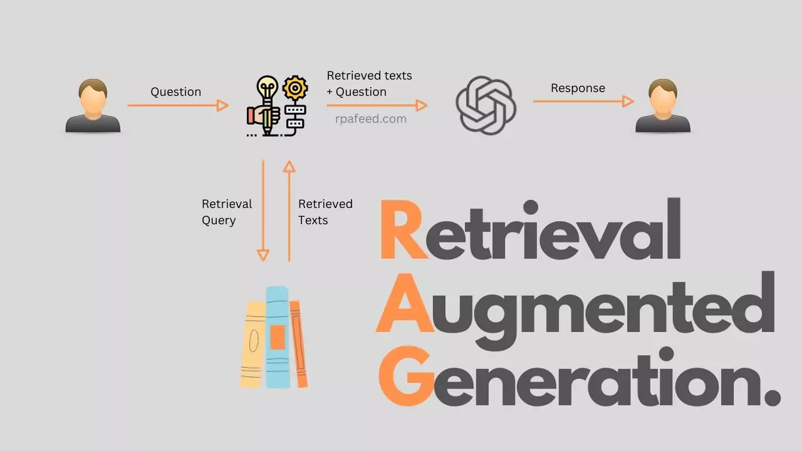
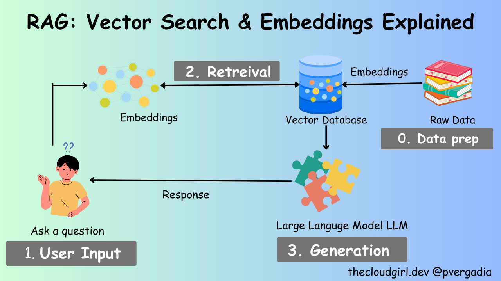

Building a RAG Chatbot with Jac Cloud and Streamlit (Part 2/3)#
Now that we have a jac application served up, let's build a simple chatbot using Retrieval Augmented Generation (RAG) with Jac Cloud and Streamlit as our frontend interface.
Preparation / Installation#
There are a couple of additional dependenices we need here
pip install mtllm==0.3.2 jac-streamlit==0.0.3 langchain==0.1.16 langchain_community==0.0.34 chromadb==0.5.0 pypdf==4.2.0
Building a Streamlit Interface#
Before we begin building out our chatbot, let's first build a simple GUI to interact with the chatbot. Streamlit offers several Chat elements, enabling you to build Graphical User Interfaces (GUIs) for conversational agents or chatbots. Leveraging session state along with these elements allows you to construct anything from a basic chatbot to a more advanced, ChatGPT-like experience using purely Python code.
Luckily for us, jaclang has a plugin for streamlit that allows us to build web applications with streamlit using jaclang. In this part of the tutorial, we will build a frontend for our conversational agent using streamlit. You can find more information about the jac-streamlit plugin here.
First, let's create a new file called client.jac. This file will contain the code for the frontend chat interface.
We start by importing the necessary modules in Jac:
streamlit(for frontend UI components)requests(for making API calls)
streamlitwill handle the user interface (UI) of the chatbot.requestswill handle API calls to our backend.
Now let's define a function bootstrap_frontend, which accepts a token for authentication and builds the chat interface.
can bootstrap_frontend (token: str) {
st.write("Welcome to your Demo Agent!");
# Initialize chat history
if "messages" not in st.session_state {
st.session_state.messages = [];
}
}
st.write()adds a welcome message to the app.st.session_stateis used to persist data across user interactions. Here, we're using it to store the chat history (messages).
Now, let's update the function such that when the page reloads or updates, the previous chat messages are reloaded from st.session_state.messages. Add the following to bootstrap_frontend
for message in st.session_state.messages {
with st.chat_message(message["role"]) {
st.markdown(message["content"]);
}
}
- This block loops through the stored messages in the session state.
- For each message, we use
st.chat_message()to display the message by its role (either"user"or"assistant").
Next, let's capture user input using st.chat_input(). This is where users can type their message to the chatbot.
if prompt := st.chat_input("What is up?") {
# Add user message to chat history
st.session_state.messages.append({"role": "user", "content": prompt});
# Display user message in chat message container
with st.chat_message("user") {
st.markdown(prompt);
}
}
st.chat_input()waits for the user to type a message and submit it.- Once the user submits a message, it's appended to the session state's message history and immediately displayed on the screen.
Now we handle the interaction with the backend server. After the user submits a message, the assistant responds. This involves sending the user's message to the backend, receiving a response from the backend and displaying it.
Add the following to bootstrap_frontend.
if prompt := st.chat_input("What is up?") {
# Add user message to chat history
st.session_state.messages.append({"role": "user", "content": prompt});
# Display user message in chat message container
with st.chat_message("user") {
st.markdown(prompt);
}
# Display assistant response in chat message container
with st.chat_message("assistant") {
# Call walker API
response = requests.post("http://localhost:8000/walker/interact", json={"message": prompt, "session_id": "123"},
headers={"Authorization": f"Bearer {token}"}
);
if response.status_code == 200 {
response = response.json();
print(response);
st.write(response["reports"][0]["response"]);
# Add assistant response to chat history
st.session_state.messages.append({"role": "assistant", "content": response["reports"][0]["response"]});
}
}
}
- The user's input (
prompt) is sent to the backend using a POST request to the/walker/interactendpoint. - The
interactwalker, as we created in the last chapter, just returnsHello World!for now. This will change as we build out our chatbot. messageandsession_idare not yet utilized at this point. They will come into play later in this chapter.- The response from the backend is then displayed using
st.write(), and the assistant's message is stored in the session state.
Lastly, we'll define the entry point of client.jac. Think main function of a python program. We authenticates the user and retrieves the token needed for the bootstrap_frontend function.
with entry {
INSTANCE_URL = "http://localhost:8000";
TEST_USER_EMAIL = "test@mail.com";
TEST_USER_PASSWORD = "password";
response = requests.post(
f"{INSTANCE_URL}/user/login",
json={"email": TEST_USER_EMAIL, "password": TEST_USER_PASSWORD}
);
if response.status_code != 200 {
# Try registering the user if login fails
response = requests.post(
f"{INSTANCE_URL}/user/register",
json={
"email": TEST_USER_EMAIL,
"password": TEST_USER_PASSWORD
}
);
assert response.status_code == 201;
response = requests.post(
f"{INSTANCE_URL}/user/login",
json={"email": TEST_USER_EMAIL, "password": TEST_USER_PASSWORD}
);
assert response.status_code == 200;
}
token = response.json()["token"];
print("Token:", token);
bootstrap_frontend(token);
}
In the entry block:
- First, we define the backend URL and test user credentials.
- We attempt to log the user in. If login fails, we register the user and then log them in.
- Once logged in, the token is extracted and printed.
- Finally,
bootstrap_frontend(token)is called with the obtained token.
Now you can run the frontend using the following command:
If your server is still running, you can chat with your assistant using the streamlit interface. The response will only be "Hello, world!" for now, but we will update it to be a fully working chatbot next.
Now let's move on to building the RAG module.
What is Retrieval Augmented Generation?#
Retrieval Augmented Generation is a technique that combines the benefits of retrieval-based and generative conversational AI models. In a retrieval-based model, the model retrieves semantically similar content based on the input. In a generative model, the model generates a response from scratch based on the input. Retrieval Augmented Generation combines these two concepts by first retrieving a set of candidate responses / relevant content and then generating a response based on the retrieved candidates.

Building a Retrieval Augmented Generation Module#
In this part we'll be building a simple Retrieval Augmented Generation module using jaclang and adding it to our application. We will use a simple embedding-based retrieval model to retrieve candidate responses and a generative model to generate the final response. Embeddings are vector representations of words or sentences that capture semantic information. We will use the Ollama embeddings model to generate embeddings for the documents and the Chroma vector store to store the embeddings.

Adding the Retrieval Module#
First, let's add a file called rag.jac to our project. This file will contain the code for the Retrieval Augmented Generation module.
Jac allows you to import Python libraries, making it easy to integrate existing libraries such as langchain, langchain_community, and more. In this RAG engine, we need document loaders, text splitters, embedding functions, and vector stores.
import:py os;
import:py from langchain_community.document_loaders {PyPDFDirectoryLoader}
import:py from langchain_text_splitters {RecursiveCharacterTextSplitter}
import:py from langchain.schema.document {Document}
import:py from langchain_community.embeddings.ollama {OllamaEmbeddings}
import:py from langchain_community.vectorstores.chroma {Chroma}
PyPDFDirectoryLoaderis used to load documents from a directory.RecursiveCharacterTextSplitteris used to split the documents into chunks.OllamaEmbeddingsis used to generate embeddings from document chunks.Chromais our vector store for storing the embeddings.
Now let's define the rag_engine object that will handle the retrieval and generation of responses. The object will have two properties: file_path for the location of documents and chroma_path for the location of the vector store.
Note: obj works similarly as dataclasses in Python.
We will now build out this RagEngine object by adding relevant abilities. Abilities, as annotated by the can keyword, are analogus to member methods of a Python class. The can abilities in the following code snippets shoudld be added inside the RagEngine object scope.
The object will have a postinit method that runs automatically upon initialization, loading documents, splitting them into chunks, and adding them to the vector database (Chroma). postinit works similarly to the __post_init__ in Python dataclasses.
can postinit {
documents: list = self.load_documents();
chunks: list = self.split_documents(documents);
self.add_to_chroma(chunks);
}
- The
load_documentsmethod loads the documents from the specified directory. - The
split_documentsmethod splits the documents into chunks. - The
add_to_chromamethod adds the chunks to the Chroma vector store.
Let's define the load_documents method and the split_documents method.
can load_documents {
document_loader = PyPDFDirectoryLoader(self.file_path);
return document_loader.load();
}
can split_documents(documents: list[Document]) {
text_splitter = RecursiveCharacterTextSplitter(chunk_size=800,
chunk_overlap=80,
length_function=len,
is_separator_regex=False);
return text_splitter.split_documents(documents);
}
- The
load_documentsmethod loads the documents from the specified directory using thePyPDFDirectoryLoaderclass. - The
split_documentsmethod splits the documents into chunks using theRecursiveCharacterTextSplitterclass. This ensures that documents are broken down into manageable chunks for better embedding and retrieval performance.
Next, let's define the get_embedding_function method. The get_embedding_function ability uses the OllamaEmbeddingsmodel to create embeddings for the document chunks. These embeddings are crucial for semantic search in the vector database.
can get_embedding_function {
embeddings = OllamaEmbeddings(model='nomic-embed-text');
return embeddings;
}
Now, each chunk of text needs a unique identifier to ensure that it can be referenced in the vector store. The add_chunk_id ability assigns IDs to each chunk, using the format Page Source:Page Number:Chunk Index.
can add_chunk_id(chunks: str) {
last_page_id = None;
current_chunk_index = 0;
for chunk in chunks {
source = chunk.metadata.get('source');
page = chunk.metadata.get('page');
current_page_id = f'{source}:{page}';
if current_page_id == last_page_id {
current_chunk_index +=1;
} else {
current_chunk_index = 0;
}
chunk_id = f'{current_page_id}:{current_chunk_index}';
last_page_id = current_page_id;
chunk.metadata['id'] = chunk_id;
}
return chunks;
}
Once the documents are split and chunk IDs are assigned, we add them to the Chroma vector database. The add_to_chroma ability checks for existing documents in the database and only adds new chunks to avoid duplication.
can add_to_chroma(chunks: list[Document]) {
db = Chroma(persist_directory=self.chroma_path, embedding_function=self.get_embedding_function());
chunks_with_ids = self.add_chunk_id(chunks);
existing_items = db.get(include=[]);
existing_ids = set(existing_items['ids']);
new_chunks = [];
for chunk in chunks_with_ids {
if chunk.metadata['id'] not in existing_ids {
new_chunks.append(chunk);
}
}
if len(new_chunks) {
print('adding new documents');
new_chunk_ids = [chunk.metadata['id'] for chunk in new_chunks];
db.add_documents(new_chunks, ids=new_chunk_ids);
} else {
print('no new documents to add');
}
}
Next, the get_from_chroma ability takes a query and returns the most relevant chunks based on similarity search. This is the core of retrieval-augmented generation, as the engine fetches chunks that are semantically similar to the query.
can get_from_chroma(query: str,chunck_nos: int=5) {
db = Chroma(
persist_directory=self.chroma_path,
embedding_function=self.get_embedding_function()
);
results = db.similarity_search_with_score(query,k=chunck_nos);
return results;
}
To summarize, we define an object called RagEngine with two properties: file_path and chroma_path. The file_path property specifies the path to the directory containing the documents we want to retrieve responses from. The chroma_path property specifies the path to the directory containing the pre-trained embeddings. We will use these embeddings to retrieve candidate responses.
We define a few methods to load the documents, split them into chunks, and add them to the Chroma vector store. We also define a method to retrieve candidate responses based on a query. Let's break down the code:
- The
load_documentsmethod loads the documents from the specified directory using thePyPDFDirectoryLoaderclass. - The
split_documentsmethod splits the documents into chunks using theRecursiveCharacterTextSplitterclass from thelangchain_text_splittersmodule. - The
get_embedding_functionmethod initializes the Ollama embeddings model. - The
add_chunk_idmethod generates unique IDs for the chunks based on the source and page number. - The
add_to_chromamethod adds the chunks to the Chroma vector store. - The
get_from_chromamethod retrieves candidate responses based on a query from the Chroma vector store.
Setting up Ollama Embeddings#
Before we can use the Ollama embeddings model, we need to set it up. You can download the Ollama from the Ollama website. Once you have downloaded Ollama, you download your desired model by runnnig the following command:
This will download the nomic-embed-text model to your local machine.
Next, you can make this model available for inference by running the following command:
Adding your documents#
You can add your documents to the docs directory. The documents should be in PDF format. You can add as many documents as you want to the directory. We've included a sample document here for you to test with. Create a new directory called docs in the root of your project and add your documents to this directory.
Setting up your LLM#
Here we are going to use one of the key features of jaclang called MTLLM, or Meaning-typed LLM. MTTLM facilitates the integration of generative AI models, specifically Large Language Models (LLMs) into programming at the language level.
We will create a new server code so delete the existing code in server.jac that we created in the last chapter and start from scratch and add the following.
Here we use the OpenAI model gpt-4o as our Large Language Model (LLM). To use OpenAI you will need an API key. You can get an API key by signing up on the OpenAI website here. Once you have your API key, you can set it as an environment variable:
Using OpenAI is not required. You can replace this with any other LLM you want to use. For example, you can also you any Ollama generative model as your LLM. When using Ollama make sure you have the model downloaded and serving on your local machine by running the following command:
This will download the llama3.1 model to your local machine and make it available for inference when you run the ollama serve command. If you want use Ollama replace your import statement with the following:
Now that you have your LLM ready let's create a simple walker that uses the RAG module and MTLLM to generate responses to user queries. First, let's declare the global variables for MTLLM and the RAG engine.
llm: This an MTLLM instance of the model utilized by jaclang whenever we makeby llm()abilities. Here we are using OpenAI's GPT-4 model.rag_engine: This is an instance of theRagEngineobject for document retrieval and processing.
Next, let's define a node called Session that stores the chat history and status of the session. The session node also has an ability called llm_chat that uses the MTLLM model to generate responses based on the chat history, agent role, and context. If you've ever worked with graphs before, you should be familiar with nodes and edges. Nodes are entities that store data, while edges are connections between nodes that represent relationships. In this case, Session is node in our graph that stores the chat history and status of the session.
node Session {
has id: str;
has chat_history: list[dict];
has status: int = 1;
can 'Respond to message using chat_history as context and agent_role as the goal of the agent'
llm_chat(
message:'current message':str,
chat_history: 'chat history':list[dict],
agent_role:'role of the agent responding':str,
context:'retrieved context from documents':list
) -> 'response':str by llm();
}
Attributes:
id: A unique session identifier.chat_history: Stores the conversation history.status: Tracks the state of the session.llm_chatability: Takes the current message, chat history, agent role, and retrieved document context as inputs. This ability uses the LLM to generate a response based on these inputs. All without the need for any prompt engineering!! Wow!
Next we'll define the interact walker that initializes a session and generates responses to user queries. Let's briefly discuss what a walker is and does. In a nutshell, a walker is a mechanism for traversing the graph. It moves from node to node, executing abilities and interacting with the data stored in the nodes. In this case, the interact walker is responsible for handling user interactions and generating responses. This is one of the key componets of jaclang that makes it so powerful! Super cool right? 🤯
walker interact {
has message: str;
has session_id: str;
can init_session with `root entry {
visit [-->](`?Session)(?id == self.session_id) else {
session_node = here ++> Session(id=self.session_id, chat_history=[], status=1);
print("Session Node Created");
visit session_node;
}
}
}
Attributes:
message: The user's message.session_id: The unique session identifier.init_sessionability: Initializes a session based on the session ID. If the session does not exist, it creates a new session node. Note that this ability is triggered onroot entry. In every graph, there is a special node calledrootthat serves as the starting point for the graph. A walker can be spawned on and traverse to any node in the graph. It does NOT have to start at the root node, but it can be spawned on the root node to start the traversal.
Now, let's define the chat ability which once the session is initialized, will handle interactions with the user and the document retrieval system.
Add the following ability inside the scope of interact walker.
can chat with Session entry {
here.chat_history.append({"role": "user", "content": self.message});
data = rag_engine.get_from_chroma(query=self.message);
response = here.llm_chat(
message=self.message,
chat_history=here.chat_history,
agent_role="You are a conversation agent designed to help users with their queries based on the documents provided",
context=data
);
here.chat_history.append({"role": "assistant", "content": response});
report {"response": response};
}
Logic flow:
- The user's message is added to the chat history.
- The RAG engine retrieves candidate responses based on the user's message.
- The MTLLM model generates a response based on the user's message, chat history, agent role, and retrieved context.
- The assistant's response is added to the chat history.
- The response is reported back to the frontend. Here we are the using the special
reportkeyword. This is one of the key feature of jac-cloud and operates a bit like a return statement but it does not stop the execution of the walker. It simply add whatever is reported to the response object that is sent back to the frontend. Isn't that cool? 🤩
To summarize:
- We define a
Sessionnode that stores the chat history and status of the session. The session node also has an ability calledllm_chatthat uses the MTLLM model to generate responses based on the chat history, agent role, and context. - We define a
interactwalker that initializes a session and generates responses to user queries. The walker uses therag_engineobject to retrieve candidate responses and thellm_chatability to generate the final response.
You can now serve this code using Jac Cloud by running the following command:
Now you can test out your chatbot using the client we created earlier. The chatbot will retrieve candidate responses from the documents and generate the final response using the MTLLM model. Ask any question related to the documents you added to the docs directory and see how the chatbot responds.
You can also try testing out the updated endpoint using the swagger UI at http://localhost:8000/docs or using the following curl command:
curl -X POST http://localhost:8000/walkers/interact -d '{"message": "I am having major back pain, what can i do", "session_id": "123"} -H "Authorization: Bearer <TOKEN>"
Remember to replace <TOKEN> with the access token you saved. Note you might need to re-login to get an updated token if the token has expired or the server has been restarted since.
In the next part of the tutorial, we will enhance the chatbot by adding dialogue routing capabilities. We will direct the conversation to the appropriate dialogue model based on the user's input.